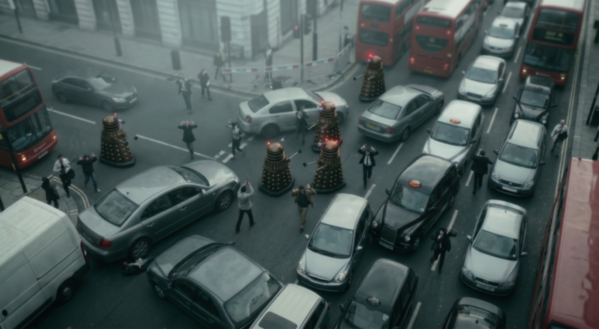

Daleks bloqueiam trânsito na Baker Street; prefeitura pede calma
Câmeras de segurança flagraram unidades cônicas metálicas gritando ordens contraditórias a pedestres no horário de pico.

O trânsito na Baker Street foi completamente interrompido nesta manhã após diversos objetos metálicos não identificados surgirem no meio da avenida durante o horário de pico.
Testemunhas afirmam que as unidades, descritas como estruturas metálicas de formato cônico, começaram a circular entre carros e pedestres enquanto repetiam comandos em voz alta.
Confusão no trânsito
Motoristas abandonaram alguns veículos após uma das unidades ordenar repetidamente que todos deixassem a região. Outras, entretanto, teriam exigido que os moradores permanecessem exatamente onde estavam.
Agentes da Polícia Metropolitana bloquearam os acessos à Baker Street enquanto equipes especializadas tentam identificar a origem das máquinas.
“Uma mandava a gente sair, outra gritava para ninguém se mexer e gritavam 'exterminar'. Ninguém sabia o que fazer.” — motorista presente no local
A Prefeitura de Londres pediu calma à população e recomendou que moradores evitem a região até que a situação esteja completamente controlada.